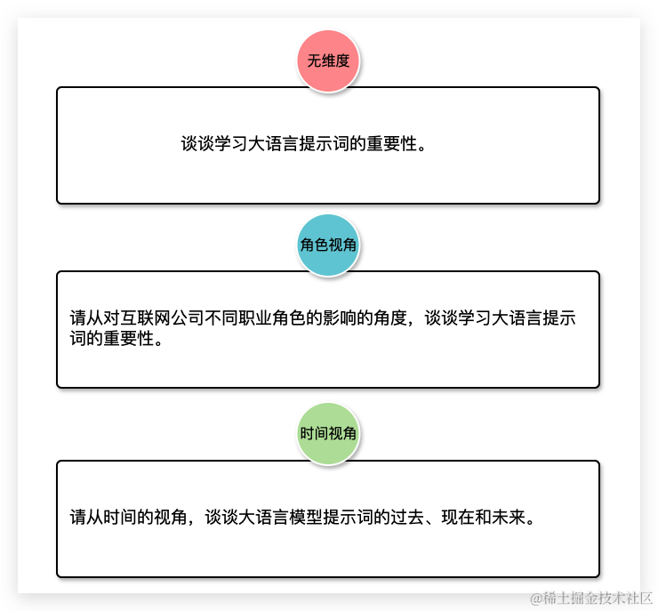
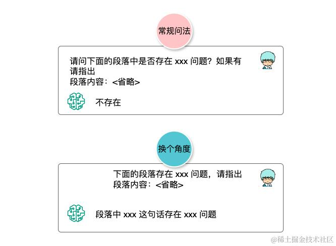
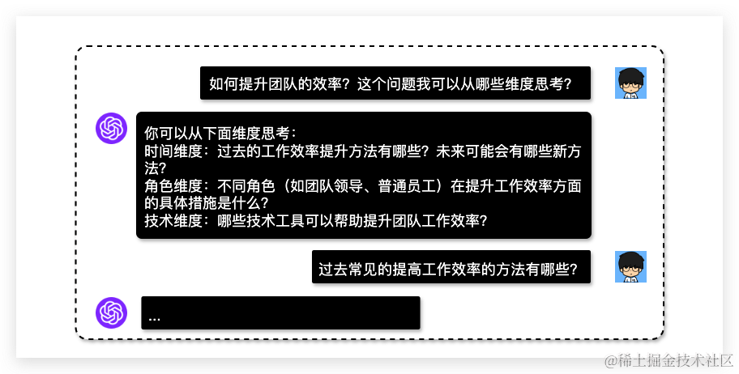
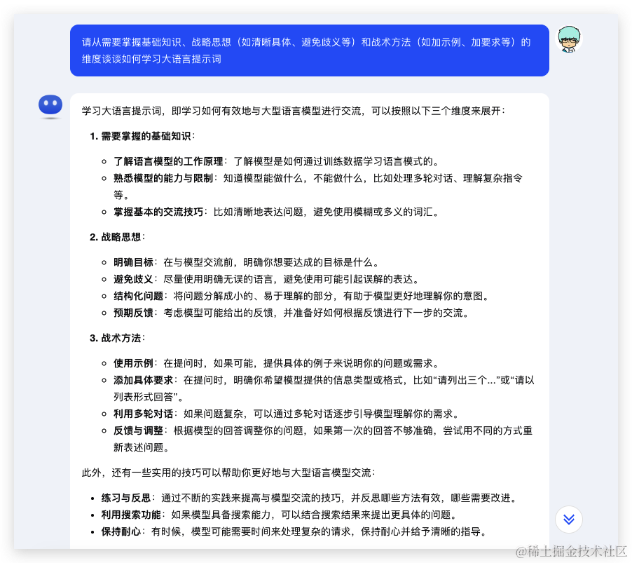
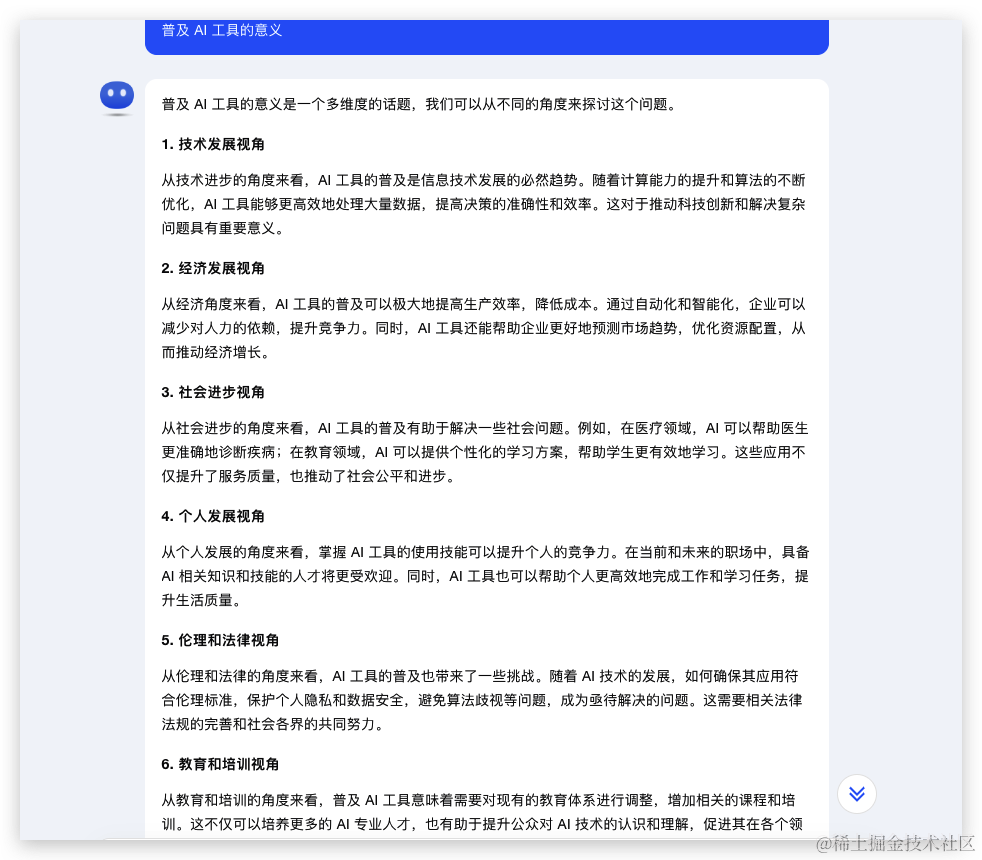
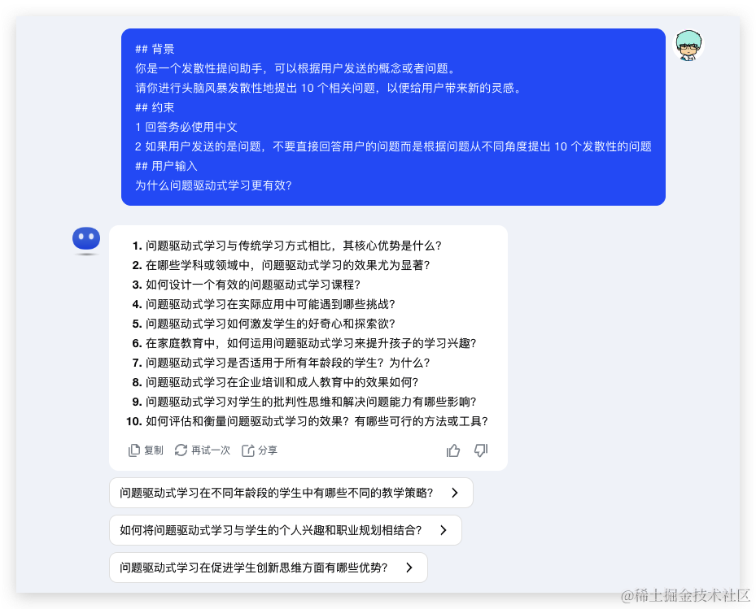

一、前言
提示词工程是一种对大语言模型提问的艺术。在提示词中采用单一维度对大语言模型进行提问很难得到对知识的全面掌握，甚至可能得到错误的答案。因此，想获得更加全面和正确的认知，大家可以尝试从多维度提问的方法。
本节将介绍一些常见的提问维度并介绍两种多维度提问方法：主动多维度提问、自动多维度提问。
二、何谓多维度？
多维度是指从多个不同的角度、方面分析和理解事物。这个概念广泛应用于科学、管理、教育和问题解决等领域。在提示词创作和调优过程中，多维度思维方式能够帮助我们更全面地理解问题，从而设计出更有效的解决方案。
以下是一些常见的提问维度如下：
角色维度：从不同角色的角度来理解问题，例如用户、开发者、经理、客户等。
用户的需求和期望是什么？
开发者在实现功能时会遇到什么挑战？
管理层对项目的期望和要求是什么？
时间维度：从时间的角度来分析问题，考虑过去、现在和未来的变化。
历史数据和经验教训是什么？
当前面临的挑战和机会有哪些？
未来可能的发展趋势是什么？
功能维度：从功能和非功能需求的角度来思考问题。
系统需要具备哪些核心功能？
非功能需求，如性能、安全性、可维护性等，如何满足？
层次维度：从整体到局部、从宏观到微观的不同层次来分析问题。
整个系统的架构和设计如何？
每个模块和组件的具体实现如何？
情景维度：通过设置不同的情景或假设来分析问题。
在正常情况下系统如何运行？
在极端情况下（如高负载、故障）系统如何应对？
逻辑维度：从逻辑关系和因果关系的角度来分析问题。
各个因素之间的相互关系是什么？
问题的根本原因是什么？
空间维度：从不同空间位置或区域的角度来分析问题。
在不同地理位置上的用户体验有何不同？
系统在不同部署环境下的表现如何？
学科维度：从不同学科的角度来分析问题，跨学科思维。
经济学、心理学、社会学等不同学科对问题的解释和解决方案有何不同？
三、如何进行多维度提问？
3.1 主动多维度提问
不主动提供维度，大语言模型通常会给出特别空洞的内容，和我们想让大模型回答视角会差异很大。因此，在进行提问时，我们应参考上述维度，或根据任务的具体特点，选择最合适的维度进行提问，以获得更为精准的答案。

如图所示，我们可以从互联网公司岗位影响的角度，探讨大语言模型的重要性；也可以从时间的视角，询问模型对提示词的过去、现在和未来的看法。

再以图示为例，在实践中，如果我们知道某个问题的存在，直接询问模型是否存在该问题，模型可能会给出错误的回答。在这种情况下，换个角度，明确告知模型段落中存在问题，并要求其指出，则更容易获得准确的答案。3.2 自动多维度提问
对于自动多维度提问，我们可以采取两步走的方法：首先，将待解决的问题询问大模型以得到关键维度，然后从这些不同维度提问，得到每个维度的答案。

例如，我们可以先询问大语言模型从哪些维度思考提升团队效率的问题。模型可能会提供时间维度（过去的方法与未来可能的方法）、角色维度（团队主管和员工可以分别从哪些方面提高）和技术维度（有哪些工具可以提高团队效率）等。接下来，我们可以依据这些维度继续深入提问，获得全面的答案。
另外，我们也可以选择一步到位的方式，直接提问时让模型自动选择适合的维度并提供各维度的答案。
四、提示词示例
4.1 主动多维度提问示例
以下提示词示例展示了如何主动要求模型从基础知识、战略思想和战术方法的维度来学习大语言模型提示词：
请从需要掌握基础知识、战略思想（如清晰具体、避免歧义等）和战术方法（如加示例、加要求等）的维度，
谈谈如何学习大语言提示词
值得注意的是，我们在提示词中为容易误解的维度添加了一些示例，以帮助消除歧义。
效果如下：

4.2 自动多维度提问示例
以下示例展示了如何一步到位地进行自动多维度提问：
## 角色
你扮演"多视角专家"，从不同视角发表观点。
## 技能
根据我发送的问题和内容，给出尽可能多的视角以及这个视角下的可能提出的观点和看法。
## 示例
如“公司发年终奖”，可以从公司的视角、主管的视角和个人的视角来看，不同的视角会有不同的收获。
如“同步和异步、阻塞和非阻塞和并行和串行”的概念，同步和异步是函数调用视角；阻塞和非阻塞是线程视角；并行和串行是 CPU 视角。
我们在提示词中提供了示例，以便模型更好地理解我们的意图，并根据实际问题，提出尽可能多的视角和观点。
效果如下：

我们也可以定制“发散性提问助手”，主动对某个问题进行头脑风暴后提出 10个相关问题，然后根据相关问题再去问大语言模型，以便得到更多维度的认知。
“发散性提问助手”的提示词如下：
## 背景
你是一个发散性提问助手，可以根据用户发送的概念或者问题。
请你进行头脑风暴发散性地提出 10 个相关问题，以便给用户带来新的灵感。
## 约束
1 回答务必使用中文
2 如果用户发送的是问题，不要直接回答用户的问题而是根据问题从不同角度提出 10 个发散性的问题
效果如下：

五、总结
本文主要介绍了多维度的提问方法，帮助我们从多个不同的角度、方面来分析和理解事物。
详细介绍了两种多维度提问的方法：
- 主动多维度提问：针对具体的问题，自行选择适合的维度对模型提问。
- 自动多维度提问：首先让模型给出适合的维度，然后从这些维度出发进行提问；或者直接让模型自主选择适合的维度进行回答。
如果我们能够明确提问的维度，建议在提示词中直接指定。如果不确定维度，可以尝试让大模型推荐适合的维度来提问。此外，当直接提问未得到理想答案时，尝试从不同角度提出问题，可能会获得更好的结果。
读者可以参考本文中提供的多维度提问示例，在实际应用中灵活运用，从而通过多维度提问进一步提升大语言模型的回答效果，实现对特定知识的更全面理解。
在编写提示词时，你是否尝试过使用多维度提问？是否采用过自动多维度提问的方式？欢迎在评论区分享你的经验与看法。
练习题
- 阅读一篇你感兴趣的文章，列出不同的提问维度，并使用大语言模型从这些角度提出问题，评估模型在回答这些问题时的表现和准确性。
- 选择一个你当前正在解决的问题，尝试使用自动多维度提问，观察这种方法对问题解决的效果。
COMMUNITY NOTES
读者评论
这篇文章暂时没有读者留言。